Volt: wheels and fenders
Each front wheel moves 4.4 cm inward at world scale. Painted fender lips project up to 4.8 cm, with return edges, opaque inner wheelhouse walls and a closed undertray. Matched views use the actual Garage; steering close-ups show both full-lock directions.
Front
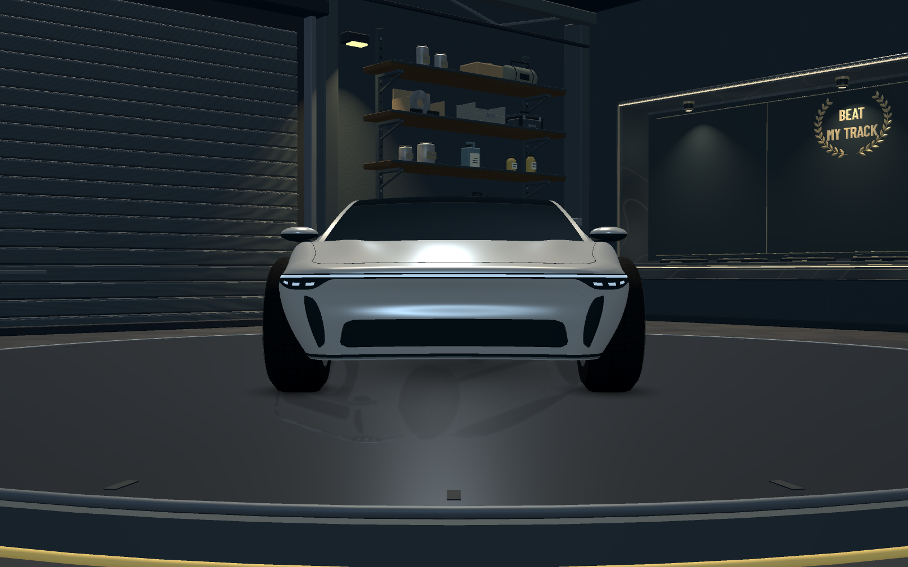
Before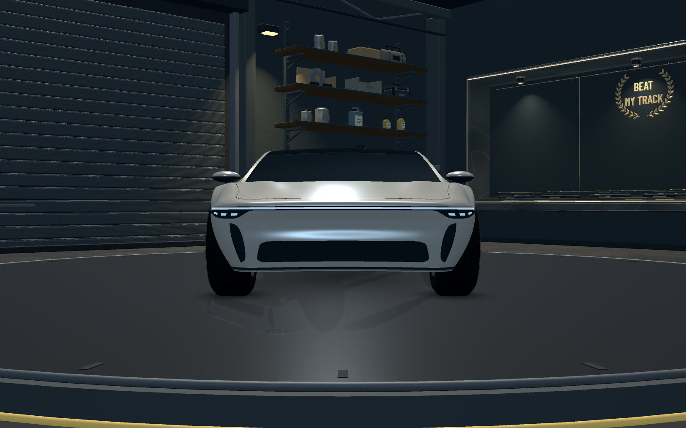
Inset front wheels, formed fenders and wheelhousesFront Quarter
Before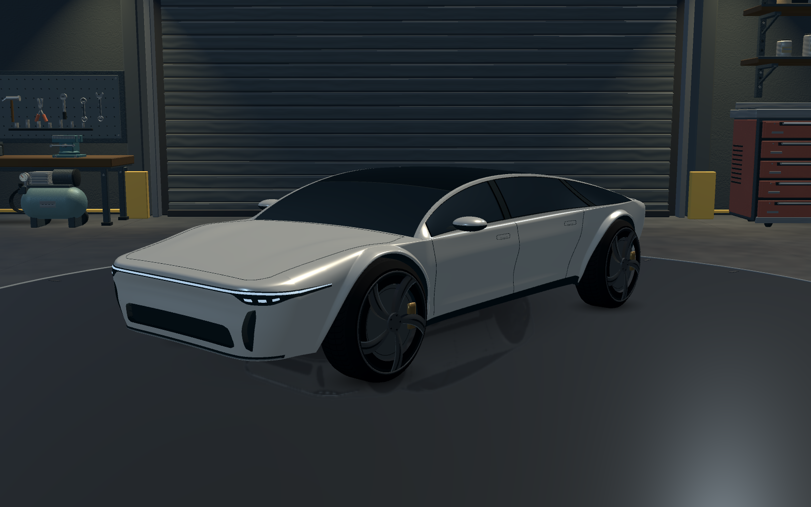
Inset front wheels, formed fenders and wheelhouses Left Front Low
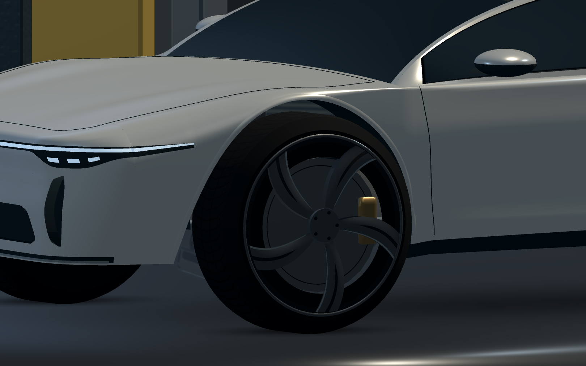
Before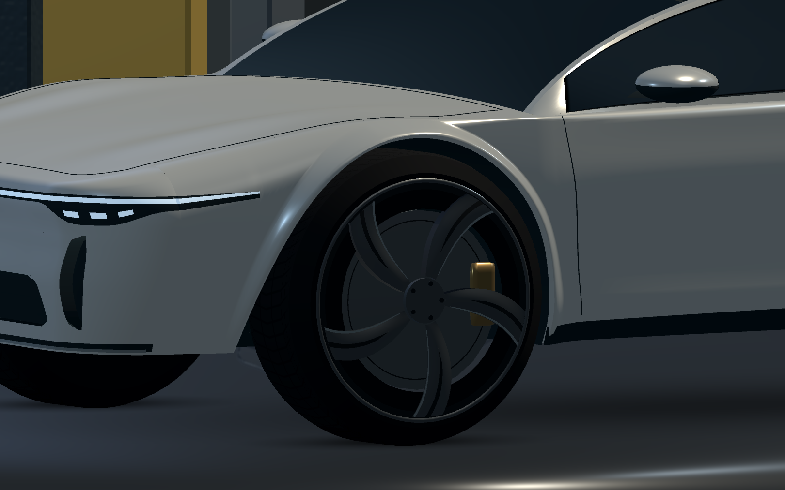
Inset front wheels, formed fenders and wheelhousesFront Side
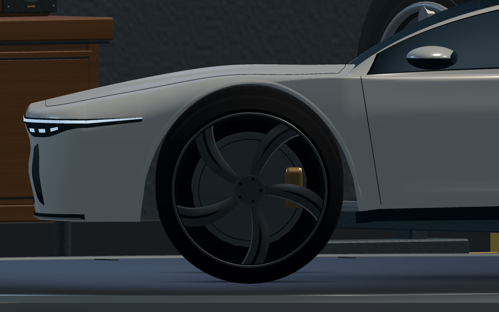
Before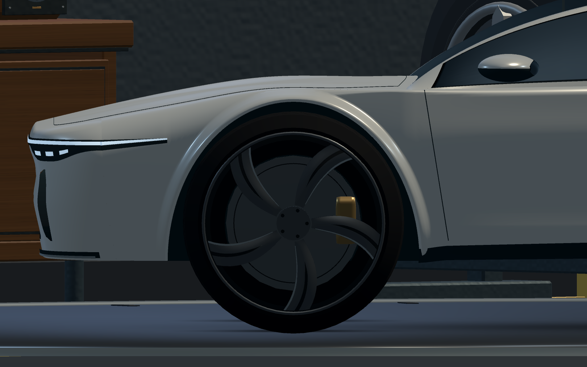
Inset front wheels, formed fenders and wheelhousesRear Low
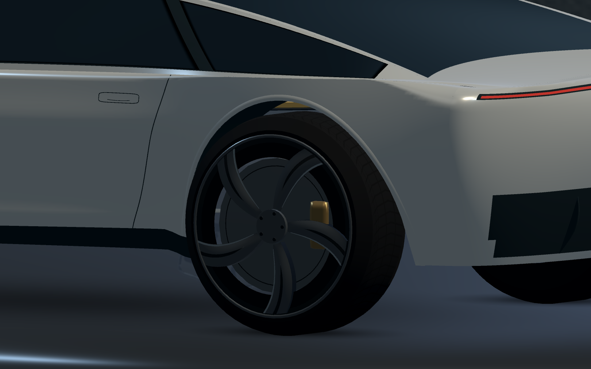
Before Inset front wheels, formed fenders and wheelhouses
Inset front wheels, formed fenders and wheelhousesUnder Front
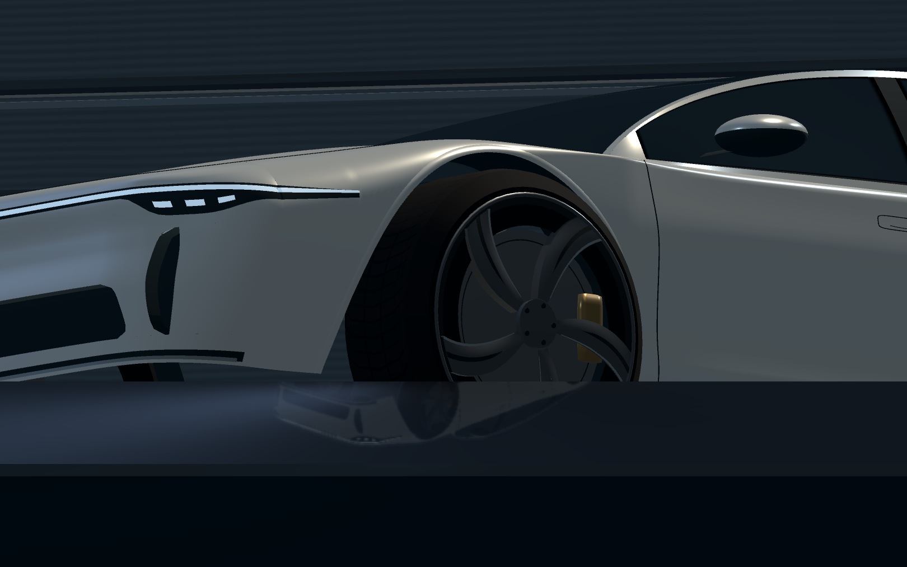
Before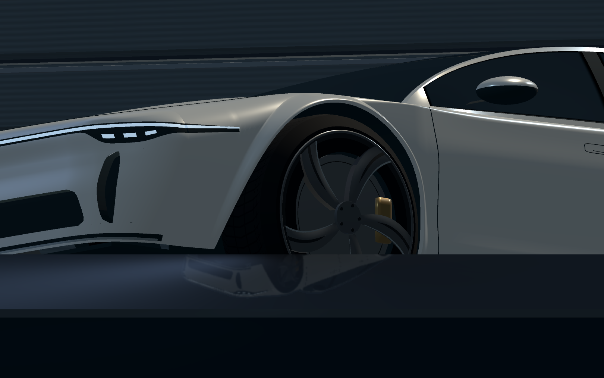
Inset front wheels, formed fenders and wheelhousesSteer Left
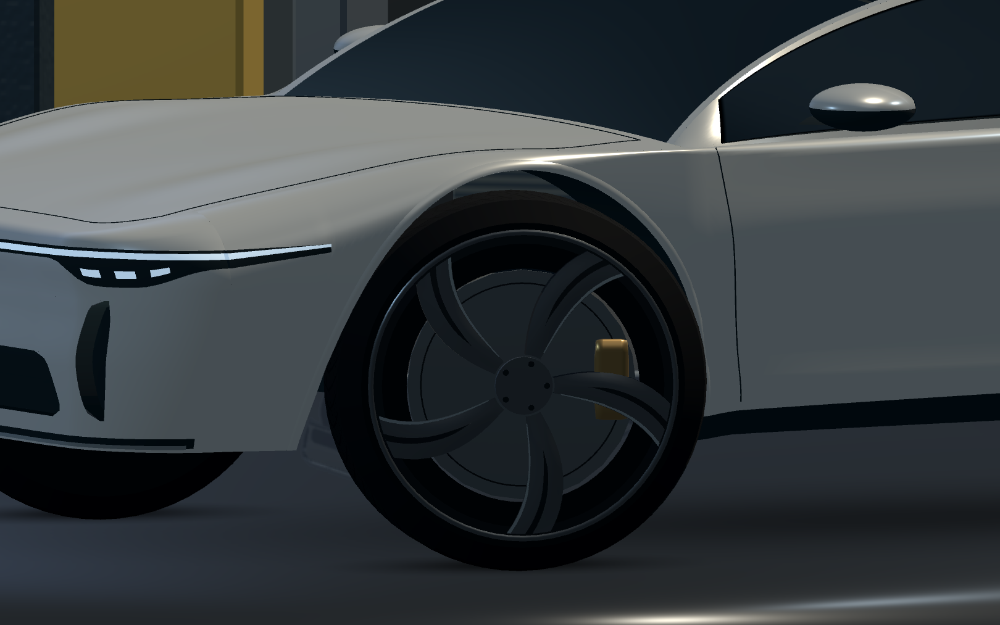
Before Inset front wheels, formed fenders and wheelhouses
Inset front wheels, formed fenders and wheelhousesSteer Right
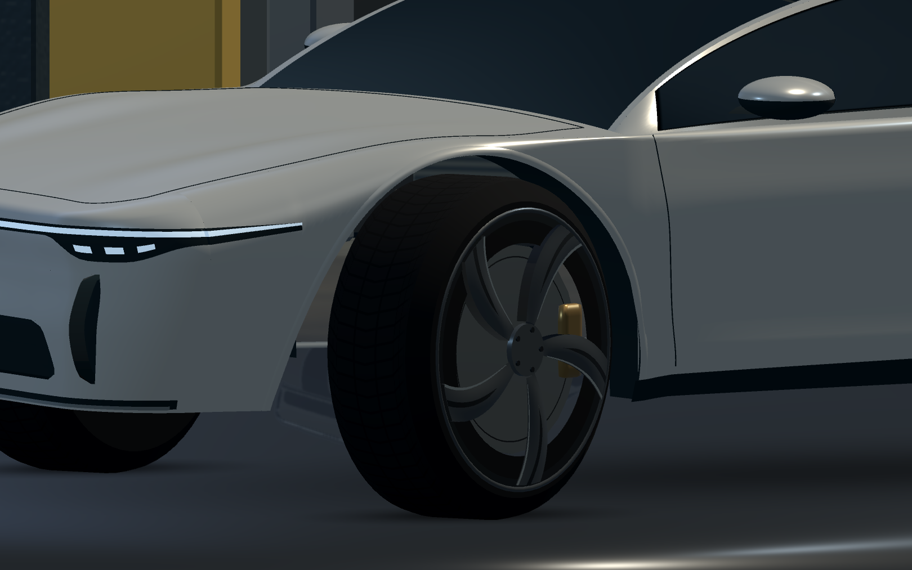
Before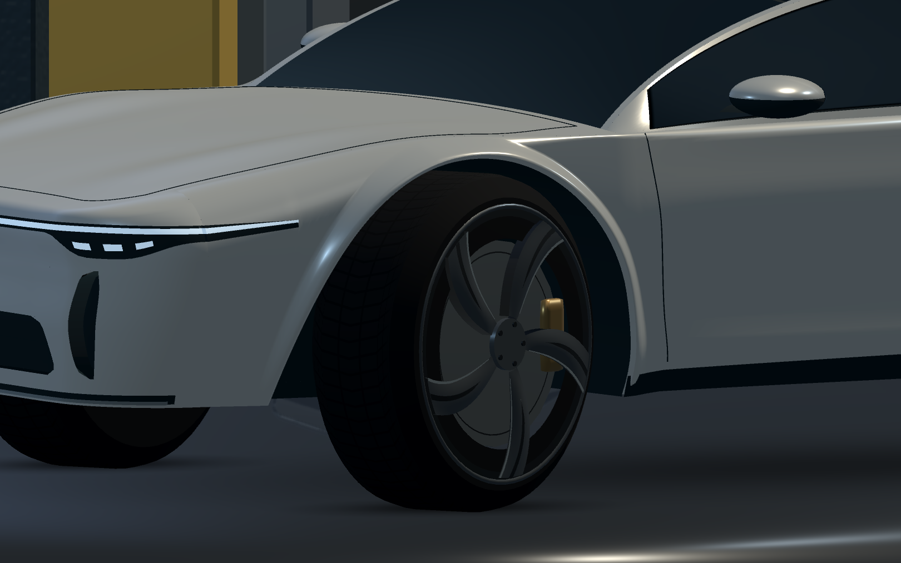
Inset front wheels, formed fenders and wheelhouses